Lesson
Loading your session…
StopNot started
Written byYou
Checked byCodeTrain

Working…Your tutor is setting up…
Hang tight — the first step will appear here in a moment.
scratch
text
Tip: Run to check yourself (⌘/Ctrl+↵). Send when green — or Review my attempt anytime for a walkthrough, even if it's failing.